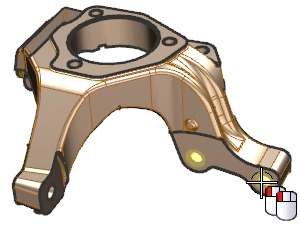
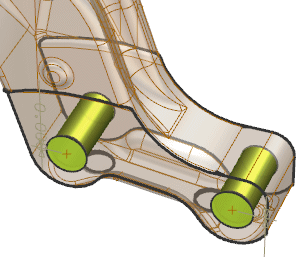
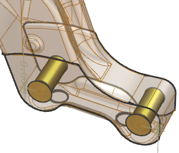
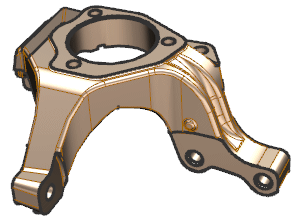

In the graphics window, double-click the lower right hole.

Notice how all the faces, except the faces of the selected features have been changed to see-thru.

In the Form and Dimensions group, in the Diameter box, type 15.0, and press Enter.

Click OK.

Close the part and do not save.